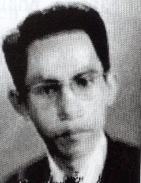

Đã sang thu... trời chiều lạnh, tối xuống mau, tôi vẫn ngồi trầm ngâm ngoài vườn sau nhà, mắt lơ đãng nhìn theo con sóc nhỏ đang nhảy chuyền từng cành cây nầy qua cành cây khác. Lá cây đã sẫm một màu đen theo bóng đêm, nếu con sóc không nhảy nữa thì tôi cũng không phân biệt được bóng hình của nó giữa tàn lá rậm rạp.
Bỗng một ánh sáng vàng chập choạng soi mờ mờ cảnh vật, tôi nghe vợ tôi lên tiếng:
– Trời sụp tối. Sao anh không vô nhà. Ngồi ngoài trời dễ bị cảm lạnh đó”.Vợ tôi cầm cây đèn cầy lớn bước ra vườn kiếm tôi.
– Em đứng yên đó, rồi đưa ngọn đèn lên cao…lên cao chút nữa… Khỏi đầu…giữ ngọn đèn ở tầm cao khỏi đầu một chút.
Vợ tôi chưa biết tại sao tôi bảo vậy nhưng vẫn làm theo ý của tôi. Nhờ có ánh đèn, tôi nhìn lên nhánh cây thấy con sóc cũng đang nhìn ánh đèn, đôi mắt nó long lanh. Con sóc đứng yên một chút, nghển đầu lên, nghiêng qua, nghiêng lại như cố vảnh tai lên để lắng nghe động tĩnh, rồi nó vụt nhảy qua nhánh cây khác. Tôi nói như la lên:
– Em rọi theo…rọi đèn theo… coi con sóc nó đã nhảy đi đâu?
– Nó nhảy đi mất rồi! Đêm tối, nó cũng phải đi kiếm chỗ để ngủ chớ…Mà… mà anh nhìn theo con sóc để làm gì? ‘
– Hồi nãy con sóc nằm im như ôm sát nhánh cây. Khi có ánh đèn của em soi tới, nó ngẩng đầu lên như một nghệ sĩ trên sân khấu vừa được ngọn đèn màu rọi sáng… Nó bừng tỉnh, cất cao đầu lên, đôi mắt long lanh.. Nó làm cho anh nhớ đến ánh mắt của người nữ diễn viên dưới ánh đèn màu… Thật là quyến rũ, thật là mê ly, truyền cảm..
– Khổ thật, xa sân khấu hơn mười lăm năm rồi, vậy mà anh vẫn không quên…Đi…đi vô nhà với em, ở ngoài trời sương lạnh lắm.
Vợ tôi nắm tay tôi, hai chúng tôi lặng lẽ đi bên nhau. Vô trong nhà rồi, vợ tôi định thổi tắt ngọn đèn cầy vì đã có ánh đèn điện sáng choang, nhưng tôi bảo vợ tôi tắt đèn điện, tôi thích ánh sáng vàng nhạt của ngọn đèn cầy.
– Anh… anh vẫn nhớ tới đôi mắt của … của nữ diễn viên nào?
Tôi bật cười:
-Anh đã hơn tám mươi rồi, đâu còn nhớ đến một đôi mắt riêng biệt nào. Ánh mắt của một nữ diễn viên trên sân khấu, bấy nhiêu đó cũng đủ để mà nhớ đời rồi. Em nhìn vô mắt của anh, em thấy gì không?
Vợ tôi nhìn kỹ vô mắt tôi, một lúc sau nói nhỏ:
– Thấy! Em thấy bóng của em, cũng như mấy mươi năm trước, trong ánh mắt đằm thắm của anh! Anh…anh thử nhìn vô mắt em, anh thấy gì không? ”
– Nhìn vào mắt em, anh thấy… thấy một người, mái đầu đốm bạc, và những nếp nhăn hằn sâu trên khóe mắt…
– Không… không phải bóng anh vì anh không già như vậy đâu…
– Anh chưa nói hết…Mái tóc bạc và những nếp nhăn trên ánh mắt là của diễn viên Ngũ Tử Tư trong tuồng Tây Thi Gái nước Việt… Hình ảnh kỷ niệm của đêm hát mà hai chúng mình mới gặp nhau và yêu nhau hơn năm mươi năm về trước. Nhìn vào mắt em, anh thấy hiện lên những kỷ niệm của chúng mình gắn liền với biết bao kỷ niệm của các nghệ sĩ thân thương dưới vòm trời nghệ thuật.
– Hôm nay sao anh lạ vậy? Sao lại nhắc những chuyện xưa?
– Có lẽ vì ánh nến chập choạng trên vòm lá khiến cho anh nhớ lại những đêm hát chầu cúng kỳ yên ở các làng mạc xa xôi… Lâu lắm rồi… khoảng năm 1943, cách nay hơn 60 năm…

Hồi đó, tôi vừa tốt nghiệp Bách khoa kỹ nghệ thì nhà trường phân bổ cho tôi vô làm việc ở Sở Bưu Điện Saigon. Tôi được nghỉ phép ba tháng trước khi nhận nhiệm sở nên tôi về quê tôi ở MỹTho, thăm gia đình và để gặp gỡ các bạn học cũ thời trung, tiểu học. Nhưng chỉ mới được một tuần lễ là tôi muốn trở về Saigon ngay vì ở dưới tỉnh lẻ, không khí thật là yên tĩnh, buồn bã.Má tôi muốn cưới vợ cho tôi ở dưới tỉnh để khi nào tôi lên Saigon làm việc thì tôi để vợ tôi ở lại quê nhà để giúp má tôi trong việc mua bán, trông nom vựa bán trái cây ở chợ Mỹ Tho. Như vậy thì hàng tuần tôi phải trở về MỹTho chớ không có thể đi biền biệt như những năm qua.
Hồi đó, trong thập niên 1930, 1940, việc dựng vợ gả chồng ở các tỉnh lẻ thường là do cha mẹ định đoạt qua lời giới thiệu của các ông mai bà mai. Má tôi muốn tôi cùng đi với bà về quận Cao Lãnh để coi mắt vợ vì Dì ruột của tôi có vựa mua bán trái cây ở chợ Cao Lãnh, bà ưng ý một cô gái ở xã An Bình nên bà muốn hỏi cưới cô gái đó cho tôi.
Tôi là đứa con dễ dạy trong gia đình. Má tôi muốn tôi cưới vợ ở dưới tỉnh thì tôi vâng lời, theo bà đi “coi mắt” cô vợ tương lai, sẵn dịp tôi đi thăm Dì Tư của tôi ở quận Cao Lãnh, như vậy vui hơn là ở loay hoay hoài trong cái tỉnh Mỹ Tho quá quen thuộc.
Đi coi mắt vợ! Bây giờ nghĩ lại thiệt là mắc cỡ, thiệt là kỳ cục.
Đi đò máy từ tỉnh Sa Đéc, đò qua vàm Cái Tôm… đò chạy dọc theo cù lao An Tịnh một đoạn khá xa, hai bên bờ sông vườn tược xum xuê, tôi thấy lác đác vài ngôi nhà mái ngói đỏ, còn lại là nhiều nhà tranh vách lá. Tôi không biết nhà của cô vợ tương lai của tôi, ở nhà ngói hay nhà lá? Dầu sao thì trước mắt tôi là cả một vùng quê trù phú, vườn cây trái nối tiếp nhau tưởng chừng như không bao giờ dứt ở hai bên bờ sông khiến cho tôi mơ màng dệt mộng. Cô vợ chưa cưới của tôi phải là con gái cưng của một nhà địa chủ, phú nông, dư ăn dư để.
Người con gái đó nhất định là sẽ thùy mị, dễ thương; nước da nhứt định sẽ trắng mịn, môi đỏ như son vì tiếng đồn là con gái Cao Lãnh, Sa Đéc, Vĩnh Long đẹp nhứt xứ! Tiếng nói của cô nàng chắc chắn sẽ êm tai như mình được nghe giọng hò câu hát… Gia đình bên vợ tương lai của tôi chắc chắn sẽ hãnh diện với bà con hàng xóm vì con gái của ông bà được một thầy ký từ Saigon xuống “coi mắt ” để xin cưới! Tôi đang suy tính coi nên ăn mặc như thế nào, cử chỉ nói năng ra làm sao khi lần đầu tiên đến nhà gái, để tỏ là mình có học, sang trọng, lịch lãm… Tôi dự tính những câu nói đầu tiên khi tôi gặp người con gái xa lạ mà chỉ qua lời mai mối của Dì tôi, bỗng trở thành thân yêu, trở thành người bạn trăm năm của tôi…
Bỗng tôi nghe tiếng người cười nói xôn xao…Tiếng rồ lớn của chiếc đò máy cắt đứt dòng suy tư mơ mộng của tôi. Đò từ từ cặp bến, trên cầu tàu, có nhiều người đến đón rước thân nhân hoặc để nhận hàng hóa. Dì Tư của tôi và mấy bà bạn đứng trên cầu tàu đã nhìn thấy má tôi và tôi. Dì vẫy tay kêu rối rít.
Tôi là người nhanh nhẹn, nếu bình thường khi gặp Dì tôi ra đón ở bến tàu, tôi lập tức nhảy lên bờ, chạy ngay lại để mừng Dì tôi. Nhưng lần nầy, tôi đi coi mắt vợ, có thể có người bên nhà gái ra bến tàu coi mắt chàng rể tương lai, nên tôi phải thận trọng, đi đứng chững chạc, không tỏ ra hấp tấp, có thể khiến cho bên nhà gái sẽ chê cười tôi. Tuy nhiên tôi cũng liếc mắt quan sát những cô gái đứng gần bên Dì tôi, thầm suy đoán coi cô nào sẽ là người chủ nợ trăm năm của đời mình?
Gái Cao Lãnh đẹp thiệt! Cô nào cũng nước da trắng hồng, miệng cười rất có duyên, đôi mắt long lanh sáng, nhìn mình như muốn tâm sự điều gì… Tôi ngơ ngẩn.., thấy cô nào cũng đáng yêu hết, hõng biết là nên chọn cô nào! Ý, tôi chợt nhớ ra là Dì Tư tôi đã chọn vợ cho tôi, ở xã An Bình, không phải là một trong những cô nầy đâu.
Chợ Cao Lãnh náo nhiệt, người mua kẻ bán đông vui, ít xe cộ trên đường phố nhưng dưới bến sông thì ghe xuồng đông ken như là một khu chợ nổi giống như bến sông Ông Lãnh trên Saigon. Tôi tò mò quan sát sinh hoạt của cái quận ly bé nhỏ nhưng rất yên tĩnh hiền hòa mà trong một tương lai không xa, đây sẽ là quê hương bên vợ của tôi. Tôi lặng lẽ đi sau lưng má tôi. Bà và Dì của tôi bận tâm nói chuyện về những bạn hàng mua bán, những mối lái hàng trái cây và thuốc rê Cao Lãnh, có lẽ hai bà đã quên mất việc tôi đi “coi mắt” vợ ở một cái vùng thôn quê cách Saigon xa lơ xa lắc này.
Nhà của Dì tôi ở xa chợ Cao Lãnh, phải đi qua cầu đúc rồi đi theo con đường đá xanh hướng về xã Tân An, Hòa An. Sát bờ bên trái là những vườn cây xoài tượng, vườn cam, vườn cây vú sữa; phía bên phải, dọc theo bờ sông có một hàng cây bông gòn. Dì tôi thấy tôi nhìn quanh quẩn quan sát, bà sợ tôi chê vùng thôn quê quá yên tĩnh này, bà nói:
-Về nhà nghỉ ngơi cơm nước xong, tối nay Dì dẫn ra chợ coi hát cải lương. Có gánh hát Tiến Hóa…(tới đây, Dì tôi day qua hỏi má tôi) Chị Ba, chị có nhớ thầy giáo Trương Gia Kỳ Sanh không? Cái ông thầy giáo ở đối diện với căn phố của thầy Hài đó, qua khỏi cầu quây một đỗi, nhà của thầy Kỳ Sanh ở gần tiệm chụp hình Vinh Ký đó, nhớ chưa?
– Nhớ, mà Dì nhắc tới ông giáo Sanh chi vậy?
– Thì ông Trương Gia Kỳ Sanh là Bầu của gánh hát Tiến Hóa, hôm gánh hát mới dọn đến, em đi chợ có gặp ổng, ổng nhận ra em là người cùng quê cùng xóm ở tỉnh Mỹ Tho, ổng mừng lắm, nói chuyện huyên thuyên… Rồi ổng mời đi coi hát… Mời là mời miệng vậy thôi, chớ em cũng phải mua hết hai cái vé thượng hạng, tám cắc một vé chớ hõng phải rẻ đâu.’
Nhắc tới ông Trương Gia Kỳ Sanh, tôi liền nhớ tới ông thầy giáo vui tánh nầy. Ông Sanh dạy lớp nhứt A trước thầy Chợ, sau đó là thầy Khịa. Khi thầy Khịa được thăng lên làm Giám đốc trường Tiểu học Mỹ Tho thì thầy Sanh đã nghỉ dạy học. Thầy có một người vợ kế là đào hát, cô Năm Nam, đào võ, nổi tiếng qua vai Triệu Tử Long trong tuồng Lưu Bị cầu hôn Giang Tả. Thầy giáo Trương Gia Kỳ Sanh lại là một soạn giả cải lương nổi tiếng, bút hiệu Trúc Viên, thầy còn là kép hát chuyên thủ vai Lưu Bị, Khổng Minh tức là những kép văn, mặt trắng. Thầy giáo Sanh mê cải lương, bỏ tiền ra lập gánh hát Tiến Hóa, mời Út Trà Ôn về làm kép chánh. Diễn viên nam có Văn Ngân, Paul Tấn, Ba Du, Tám Mẹo, diễn viên nữ có Năm Nam, Ba Liên, Hai Hỷ, Năm Bé, Ngọc Sương, Sáu Nguyệt…
Gánh hát Tiến Hóa chuyên hát tuồng Tàu:
* Quan Công phục Huê Dung Đạo,
* Lưu Bị Cầu Hôn Giang Tả,
* Khổng Minh thiệt chiến quần nho,
* Quan Công phò nhị tẩu,
* Từ Thứ qui Tào,
* Trương Phi thủ Cổ thành,
* Tam khí Châu Do,…
nên khi hát ở các tỉnh Hậu Giang, đoàn hát Tiến Hóa rất là ăn khách. Các Ban Triều Châu, Quảng Đông ở Chợ Lớn công nhận đoàn hát Tiến Hóa hát tuồng Tàu (đời Tam Quốc) rất là hay nên họ tặng cho đoàn hát một tấm trướng thêu bốn chữ “Toàn Hảo Chi Ban ” mà Bầu gánh hát Trương Gia Kỳ Sanh đi hát ở đâu cũng đem treo tấm trướng Toàn Hảo Chi Ban đó trước cửa rạp hát.
Má tôi nói:
– Coi kia… cái thằng… nghe nói cho coi hát cải lương thì cặp mắt của nó sáng rỡ… Bên nhà gái hẹn thứ bảy này mới mời má con mình với Dì Tư và mấy bà bạn tới dùng cơm. Họ nói là nhân dịp cúng giỗ, nhưng đó là tạo một dịp cho con coi mắt con Quyên… Má với Dì phải dặn con khi tới đó thì phải làm sao, nói năng như thế nào, thưa gởi những ai…
Má tôi còn nói gì thêm nhiều nữa, nhưng tôi chỉ nhớ là cô đó tên Quyên… Cái tên nghe hay quá, con người nhứt định là phải đẹp! Từ giờ cho đến thứ bảy là còn ba ngày nữa, tôi sẽ có dịp đi rong chơi trong thôn xóm và có dịp coi hát cải lương, sau đó tôi sẽ tính tới chuyện đi coi mắt vợ.
Hồi học trường Tiểu học MỹTho, tôi học lớp của thầy Sanh dạy. Những ngày cuối tháng, thầy biểu tôi vô nhà thầy cộng sổ điểm của cả lớp nên thầy thương tôi lắm. Bây giờ bất ngờ hai thầy trò gặp lại nhau ở một quận lỵ xa xôi nầy, nhứt định thầy sẽ mừng rỡ và tôi sẽ được coi hát cọp thoải mái.
Cơm nước vừa xong, tôi nghe tiếng trống đánh ròn rã từ trên phố chợ di chuyển dần xuống xóm nhà của Dì tôi, tôi chạy ra trước cửa xem…
Gánh hát đi rao bảng, rải chương trình đêm hát.( programme).
Họ mướn một chiếc xe lôi đạp trên chợ, chở hai người trong đoàn hát ngồi đánh trống và chập chỏa, xe lôi chạy dọc theo bờ sông, qua các xóm để rải chương trình quảng cáo tuồng hát. Họ quăng từng nắm chương trình lên cao cho tung bay theo gió. Những tờ chương trình đủ màu bay lượn như những cánh bướm. Trẻ nhỏ trong thôn xóm chạy theo lượm, reo hò, dành giựt, không khí thật là vui.
Tôi cũng chạy ra lượm một tờ. Má tôi biểu đọc tờ chương trình cho bà nghe, tôi nói:
– Tối nay hát tuồng Tam Khí Châu Do, con phải ra mua vé liền thì mới có chỗ tốt. Con sẽ về liền, nghe má.
Nói rồi tôi đi liền vì tôi sợ Dì tôi ngăn cản. Tôi muốn gặp thầy Sanh, muốn đi dạo phố chợ một mình, hưởng một chút tự do trước khi phải sống gò bó theo phong thái phải có của một anh chàng trai đi coi mắt vợ.
Tôi gặp thầy giáo Sanh, ông bầu gánh hát Tiến Hóa tại tiệm cà phê bên hông chợ. Ông ngạc nhiên không hiểu sao tôi lại lò mò tới cái quận nhỏ nầy vì ông biết là nhà của tôi ở MỹTho. Ồng dẫn tôi vô gánh hát, giới thiệu tôi với vợ ông, cô đào chánh Năm Nam và các nghệ sĩ Út Trà Ôn, Văn Ngân, Ngọc Thạch, Ba Du, Ba Liên, Tám Mẹo…
Các nghệ sĩ nói chuyện tự nhiên, vui vẻ. Họ xa Saigon đi hát ở miền lục tỉnh cũng khá lâu rồi nên nhớ Saigon, họ hỏi đủ thứ chuyện. Còn tôi thì tò mò muốn biết cuộc đời phiêu bạt rày đây mai đó của người nghệ sĩ như thế nào nên chúng tôi nói chuyện với nhau tưởng chừng không bao giờ dứt chuyện.
Kép Văn Ngân( lớn hơn tôi hai tuổi) dẫn tôi ra sân khấu coi.
Sân khấu được dựng trong nhà lồng chợ, người ta kê tám cái thùng dầu hắc làm cột, ở trên lót đà cây và ván. Thùng dầu hắc thì mượn của Ty Công Chánh sở tại, họ đang tráng nhựa con đường sau nhà thương, hướng đi về Đình Trung xã Mỹ Trà. Ván và cây thì mướn của nhà vựa bán cây tràm và đưng lợp nhà ở sát bờ sông. Vì mái chợ cao chưa tới ba thước nên tấm phông vẽ đền vua phải cuốn lại mất một phần ba cảnh, mới nhìn tưởng như cung điện của nhà vua cao ngút tới mây xanh. Đèn hai bên cánh gà đựng trong hai cái máng cây, như mấy cái máng đựng cám cho heo ăn nhưng nhỏ hơn và được dựng đứng. Mỗi máng có tám bóng đèn, mỗi bóng một trăm watts, hai bóng bịt giấy kiếng đỏ, hai bóng bịt giấy kiếng xanh, bốn bóng trắng. Cánh gà dùng vải xanh che thay cho các tấm cánh gà vẽ cột rồng vì cánh gà của đoàn hát đóng cao quá, đem vô chợ để trên sân khấu không được.
Dì tôi thấy tôi đi lâu quá không về, bà ra chợ kiếm. Tôi nói mua được hai vé hát ở hàng đầu để cho má với Dì coi, tôi vô hậu trường chơi với các nghệ sĩ và ông bầu Sanh. Dì tôi cầm giấy hát trở về nhà.
Những anh làm dàn cảnh của gánh hát bắt đầu quét dọn chợ, rửa chợ, sắp đặt các ghế xếp có dán số sau lưng theo như plan bán vé hát. Phía sau chừa khoảng gần 5 thước từ vách sát cửa vô rạp tới sát hàng ghế hạng nhì để cho khán giả hạng ba, hạng mua vé đứng. Một số anh em dàn cảnh khác đang che những tấm “cà tăng” quanh nhà lồng chợ để biến cái chợ quận trở thành một rạp hát. Ngay cửa dành cho khán giả vô coi hát, có một cái bàn nhỏ để bán vé cho những người tới mua vé trễ.
Sáu giờ chiều là người trong đoàn hát ra đánh trống, đánh chập chỏa rất là xôm như trống múa lân để quảng cáo. Khán giả ở trong các xẻo sâu, trong mương Điều, ở xã Hòa An, Tân An đã lục tục kéo ra chợ, chờ coi hát. Trước rạp hát, nhiều tiệm bày bàn ghế ra để bán cà phê, nước đá, nước ngọt, bánh trái. Có nhiều gánh bán cháo cá, hủ tiếu, bánh canh, chè.. Người đến mỗi lúc một đông, ồn ào, náo nhiệt, không khí vui như một ngày hội trong quận.
Ở quận Cao Lãnh, trong thập niên 1940, nhà đèn chạy bằng dầu mazout nên chỉ đủ cung cấp điện cho nhà thương, dinh ông quận, một số nhà dân có đóng tiền dùng đèn điện. Đèn đường thì có một số ít ngọn, chỉ sáng một màu vàng mù mờ. Các tiệm quán bán đêm thường phải thắp thêm đèn tọa đăng hoặc đèn măng-xông. Tới 10giờ đêm thì nhà đèn cúp điện trong các nhà dân, chỉ còn cung cấp cho dinh quận, bót gác, nhà thương và một số đèn đường. Khi gánh hát tới mướn chợ che cà- tăng để hát thì mỗi đêm hát, ông Bầu gánh phải trả 50 đồng tiền điện, hai trăm đồng tiền mướn chợ, mướn ghế xếp và tiền mướn cảnh sát giữ trật tự. Đèn điện chỉ được dùng trong hậu trường để nghệ sĩ hóa trang và trên sân khấu khi nghệ sĩ hát. Vì vậy gánh hát phải đốt thêm hai ngọn đèn măng- xông để trước cửa và một ngọn măng-xông khác trong khán phòng. Khi nào bắt đầu hát thì sẽ tắt cây đèn trong khán phòng.
Đêm đó hát tuồng Tam Khí Châu Do:
*Ông Bầu Sanh (tức soạn giả Trúc Viên) thủ vai Khổng Minh cầu đông phong,
*Út Trà Ôn vai Lưu Bị,
*Ba Du vai Châu Do,
*Văn Ngân vai Tôn Quyền,
*Cô Năm Nam giả trai thủ vai Triệu Tử Long,
*Cô Ba Liên vợ của anh Ba Du thủ vai Ngô Quốc Thái…
Toàn là những nghệ sĩ tài danh, ca, ngâm, diễn xuất đều quá hay. Khán giả vỗ tay từng chập..
Đến lớp Khổng Minh cầu được gió đông, nhờ Triệu Tử Long cướp thuyền Ngô để trở về với Luu Bị, đề đốc Châu Do đưa binh truy nã, định bắt giết Khổng Minh nhưng Khổng Minh đã đi thoát rồi, Châu Do tức quá, hộc máu… Lớp nầy Ba Du diễn xuất thần, vừa hộc máu ra thì bị cúp điện! Trong rạp hát tối đen, tiếng mọi người bàn tán, la ó thật lớn. Cảnh sát thổi tu hít và la lớn lên:
– Yêu cầu mọi người ngồi yên. Xin trật tự và im lặng.
Nhiều người vẫn nói xôn xao. Có người cho là vì đoàn hát không mời nhân viên nhà đèn coi hát nên bị họ phá. Có người nói là gánh hát không đóng tiền điện nên bị cúp…
Ông Bầu Sanh vẫn còn mang mặt hóa trang vai Khổng Minh, cầm một cây đèn cầy đốt sáng, khoát màn hát, bước ra giữa mặt tiền sân khấu. Khán giả im lặng. Ông Khổng Minh tằng hắng một tiếng rồi nói:
– Bổn bang xin cáo lỗi cùng quí khán giả, bổn bang có đóng tiền đèn cho nhà điện…ủa, nhà điện cho tiền đèn… ý mà nhà đèn nói máy chạy quá sức nên bị lột dên…Bây giờ tối thui, còn một lớp tuồng thiệt hay nữa, xin cho bổn bang đốt đèn cầy hát tiếp cho quí khán giả coi chơi cho đủ lớp tuồng….
Ông Bang Xù, chủ chành lúa và nhà máy xay lúa, đứng lên nói lớn:
– Hà, nị hát lèn cầy, ai mà thấy? Ngộ cho nị mượn mấy cây đèn măng-xông để hát. Chịu thì ngộ biểu mấy đứa nhỏ chạy về nhà lem tới.
– Dạ, cám ơn ông chủ.
– Hầy ông chủ cái gì? Ngộ: ông Bang.
– Dạ, cám ơn ông Bang…
Ông Bầu Sanh lui vô, biểu anh em chờ đèn, hát tiếp.
Tôi nghe anh Ba Du kêu trời: ” Trời ơi, hát tiếp thì tôi làm sao mà ói máu nữa được? Hết máu trong bụng rồi… ”
– Thì mầy để một chén máu sẵn trên cái bàn, mầy ca hát, tức tối la lên rồi quay người lại che, đừng cho khán giả thấy, mầy bưng chén máu, hớp một hớp thật nhiều rồi quay ra phía khán giả mà ói máu…Ông Bầu Sanh nói như ra lịnh.
Ba Du cằn nhằn: Ừ thì phải làm vậy, chớ làm sao bây giờ?
Bốn cái đèn măng-xông được mang tới. Ông bầu biểu đem một cái đèn măng-xông để bên hông sân khấu chỗ dàn đờn để cho nghệ sĩ hóa trang, thay đổi xiêm y và cho nhạc sĩ thấy đường để đánh trống, đệm nhạc. Còn ba cái đèn kia thì mấy anh dàn cảnh bắc thang treo lên cao trước sân khấu. Như vậy thì sân khấu sáng bạch mà phòng khán giả cũng sáng trưng.
Màn kéo lên hát tiếp. Ba Du – Châu Do ra vuốt râu, trợn mắt, hét lớn:
– Ta đã để cho Khổng Minh bôn đào. Tức ôi cha chả là tức..”
Ba Du – Châu Do vuốt râu, đấm ngực, quay vô trong, lấy mình che mắt khán giả, hớp một hớp nước pha đỏ, rồi quay ra, phun phèo phèo. Vậy mà khán giả cũng khoái, vỗ tay khen ào ào…
Đêm đó vãn hát, ngồi ăn cháo, ông Bầu nói:
– Ngày mai phải đi chạy rạp. Ở đây nhà đèn phá nữa thì hết hát. Dám rã gánh hát lắm à… Mai nầy tôi sẽ đi An Bình, kiếm mướn đình hay chợ.
– Thầy cho tôi theo với. Tôi muốn biết xã An Bình hay xã Mỹ Trà.
Ông đồng ý, dặn tôi ngày mai trễ lắm là 9 giờ sáng phải có mặt tại quán cà phê trong chợ để cùng đi xã An Bình.
Sáng hôm sau, tôi nói với Má tôi và Dì là tôi có bạn học ở xã Bình Hàng Trung, chúng tôi gặp nhau ở rạp hát hồi hôm, bạn tôi mời lại nhà bạn chơi, chiều tối tôi về. Má tôi không muốn cho tôi đi nhưng bà Dì nói là cứ để cho tôi đi chơi với bạn. Bà hy vọng tôi sẽ thích sống ở miệt vườn này và như vậy thì việc bà chọn vợ cho tôi ở xã An Bình cũng sẽ được thuận lợi hơn.
Ông Bầu chờ tôi trước chợ, thấy tôi đến đúng hẹn, ông bèn dẫn tôi và anh Tám dàn cảnh ra chợ ăn hủ tiếu, uống cà phê rồi lại bến xe lôi. Xe của ông đã mướn sẵn, có để một cái trống, chập chỏa, một xấp giấy áp phích và chương trình đủ màu, in quảng cáo tuồng hát.
Tôi hỏi:
– Bộ thầy đi rao bảng để hát hay sao mà mang theo trống với nhiều tờ chương trình vậy?
– Không! Nếu mướn được chỗ hát thì mình dán áp phích và rải chương trình quảng cáo luôn. Phải chở theo cho nó tiện. Nếu không có địa điểm hát thì ngày mai mình rời qua rạp Sa Đéc”.
Tôi nghe ông Bầu nói vậy là tôi không muốn đi theo ổng vì nếu mướn được đình hay chợ để hát, ổng đánh trống, rao bảng, tôi ngồi chung xe lôi đó, rủi mà bên nhà vợ chưa cưới của tôi nhìn thấy tôi, đến khi tôi đi coi mắt vợ thì rắc rối lắm. Nhưng ông Bầu đâu có biết tâm sự của tôi, ổng kêu tôi lên ngồi gần bên ổng, để anh Tám ngồi phía càng xe, rồi ổng bảo anh đạp xe lôi cho xe chạy. Ông nói thêm cho tôi yên lòng:
– Mầy đi theo tao chơi, chừng không thích thì mầy lội bộ về. Không có xa lắm đâu.
Xe chạy được một đoạn đường, ông nói:
– Con lộ đá phía sau nhà thương Cao Lãnh chạy thẳng qua cầu sắt là tới Đình Trung. Ở đó quẹo trái là có con lộ đất lớn đi về xã Mỹ Ngãi, cũng đông dân cư lắm. Đi thẳng có một con đường lộ băng qua đồng ruộng, độ một cây số là tới xã An Bình. Tại xã An Bình có một con lộ đất rộng lớn đi qua xã Mỹ Thọ, rồi thẳng một đường đi qua các xã Bình Hàng Trung, Bình Hàng Tây, Mỹ Long, Mỹ Hiệp. Sức trai như mầy, đi một hơi qua ba, bốn xã chừng vài tiếng đồng hồ, hỏng có lạc đường đâu mà mầy sợ. Mầy có đem tiền theo trong túi không? Nè, tao cho một đồng bạc, dằn túi. Dọc đường có bán bánh ú, bánh tét, có bán cam, bưởi, dừa xiêm… không sợ đói khát. Mầy theo tao một lát cùng ngồi xe lôi mà về. Chừng như mầy chờ tao ở Ban Hội Tề lâu quá thì mầy thả bộ đi chơi đâu đó rồi lội bộ trở chợ quận. Mầy nhớ đường chớ?
Tôi không muốn lấy nhưng ổng đã nhét tiền vô trong túi của tôi, tôi không tiện trả lại ngay vì sợ làm phật ý của ổng. Tôi thầm tính trong bụng, khi qua tới xã An Bình, tôi mượn cớ đi loanh quanh xem cảnh vật rồi tôi đi bộ trở về Cao Lãnh. Như vậy dầu cho ông đánh trống hay hát bội trên xe lôi thì cũng chẳng có can dự gì tới tôi.
Tới Đình Trung, ông nói:
– Nếu hát được ở xã Mỹ Trà thì hay lắm. Người ở Chợ Cao Lãnh qua coi cũng được mà ở xã Mỹ Ngãi hay xã An Bình qua coi cũng tiện đường về. Lúc nầy có trăng sáng, lại chưa phải lúc gặt lúa hay tới mùa cam quít nên dân chúng rảnh rang, họ sẽ đi coi hát đông lắm. Tụi bây chờ tao nghe hông?”
Nói rồi ông nhảy xuống xe, đi thẳng lại Nhà việc của Ban Hội Tề xã Mỹ Trà.
Anh đạp xe lôi tự giới thiệu tên là Sáu Hộ, anh dẫn anh Tám và tôi lại ngồi trong nhà mát. Anh Sáu Hộ lấy ra một cái túi nhỏ đựng thuốc rê, mời tôi với anh Tám mỗi người vấn một điếu, hút thử. Anh Sáu vừa vấn thuốc vừa nói:
– Thuốc rê Xiêm mẳng của Xã Tân An, Hòa An nổi tiếng là thuốc lá ngon số dách. Lá thuốc được xắt thật nhuyễn, màu thuốc vàng tươi. Lấy tay rờ thì bánh thuốc êm mịn như nhung, hơi rít rít tay một chút vì nhựa thuốc. Đốt hút thì tàn thuốc trắng phau, mùi thuốc nặng mà êm chớ không hét như thuốc Gò Vấp. Hút một điếu thuốc rê Xiêm mẳng của xã Tân An, Hòa An rất ngon, đã ghiền hơn là hút nguyên một gói thuốc lá Bách Tô ( Bastos) hay thuốc Mélia vàng.
Tôi cũng hút thử một điếu thuốc rê Xiêm mẳng, phải công nhận là thuốc ngon, hơi nặng mà êm dịu, hút đã ghiền như lời anh Sáu Hộ giới thiệu. Chúng tôi hút chưa tàn điếu thuốc thì ông Bầu Sanh từ nhà việc của Ban Hội Tề xã bước ra, tay cầm tờ giấy có đóng mộc đỏ chói. Ông cười hề hề:
– Xong rồi… Có giấy phép đây. Phương, mầy phụ với tao dán áp phích, lựa chỗ nào dân chúng hay qua lại để họ thấy. Không cần biết chữ, không cần đọc tựa tuồng, ho thấy áp phích của tao có vẻ hai cái mặt nạ “khóc cười” là họ biết có gánh hát tới. Tám, mầy đánh trống, anh đạp xe lôi chở thằng Tám chạy qua xã An Bình rải chương trình quảng cáo rồi quành về đây rước tôi với thằng Phương.
Tôi khỏi phải đi theo xe lôi có đánh trống quảng cáo là tôi yên lòng vì khỏi phải qua xã An Bình với anh Tám, tôi không sợ gặp những người bên nhà gái. Ở xã Mỹ Trà, chỉ dán vài tờ áp phích phụ với ông Bầu, xong rồi tôi thả bộ tà tà đi qua xã An Bình rồi lội bộ về Cao Lãnh.
Khi tôi với ông Bầu Sanh tới dán áp phích trên cột nhà mát Đình Trung, có ba cô gái thật đẹp, mặc áo bà ba bông màu sắc trang nhã, đi đến. Các cô hiếu kỳ, ghé lại coi mấy tấm áp phích. Một trong ba cô hỏi ông Bầu:
– Chú ơi chú, gánh hát hát ở Mỹ Trà mấy bữa? Có dọn qua hát ở An Bình, Mỹ Thọ hay Bình Hàng Trung không hả chú?
– Chỗ nào có rạp hát, có đình, chợ, hát được thì gánh hát của chúng tôi đến hát. Tối nay chúng tôi sẽ hát ở Mỹ Trà, mời các cô đến xem..
– Ông ơi, cho con nhỏ nầy nó theo gánh hát với, nó biết đờn ạt-mô-nhum đó( loại đàn phong cầm dùng trong nhà thờ Thiên chúa)
– Chị kỳ quá hè… Bác ơi, chỉ nói đùa để ghẹo cháu đó. Cháu đờn trong nhà thờ cho Ban đồng nhi ca, đờn cho gánh hát sao được.
Cô bé biết đờn ạt-mô-nhum, đẹp như một con búp bê Nhựt Bổn. Đôi mắt sáng long lanh, chân mày cong lá liểu, môi đỏ như son, nước da trắng hồng và mịn như tơ nhung. Tiếng nói của cô rất trong, rất êm. Chỉ mới nhìn thấy ánh mắt, nụ cười và nghe giọng nói dịu dàng êm đềm của cô bé, trong lòng tôi đã xao xuyến, đã ước mơ…
Tôi nói:
– Cô đẹp quá! Nếu cô theo gánh hát, không cần đờn, không cần ca, chỉ cần cô bước ra sân khấu nở một nụ cười, khán giả nhìn cô sẽ sững sờ, sẽ chóa mắt như nhìn thấy một ngọn đèn ngàn nến….
– Thiệt vậy hả anh? – Cô gái hồn nhiên hỏi tôi.
– Thiêt!.. Thiệt… Tôi nhìn cô nãy giờ mà tôi… tôi có cảm giác lâng lâng như đang ở trên mây… hồn vía phiêu bạt dật dờ đâu mất…
– Anh nói chuyện nghe vui quá. Anh là kép hát hả? Anh đóng vai gì.
Cô bạn của cô gái xen lời, tôi chưa biết trả lời làm sao thì ông Bâu Sanh đỡ lời:
– Anh nầy làm thầy ký trên Saigon, học trò cũ của tôi ở trường Mỹ Tho. Anh xuống thăm tôi. Anh cũng chưa theo gánh hát. Nếu ảnh theo thì tôi cho ảnh làm Vua.
Các cô cùng cười:
– Ông Vua… Làm Vua…hay quá…
Anh Tám và anh Sáu Hộ về tới. Tiếng trống đánh rộn rã như thúc dục, như gọi mời. Trẻ nhỏ trong các xóm túa ra, quây quần bên chiếc xe lôi. Ông Bầu lên cầm chập chỏa, hòa với nhịp trống của anh Tám. Tôi cũng cao hứng lên ngồi kế bên, lấy từng xấp chương trình tung cao lên như những đàn bướm bay lượn chập chờn. Các trẻ nhỏ đua nhau lượm chương trình. Xe chạy qua cầu sắt trở về Cao Lãnh. Tôi đưa tay vẫy chào ba cô gái mới gặp bên đường. Các cô cũng cười, vẫy tay đưa tiễn.
Xe chạy một đoạn khá xa, tôi chợt nhớ:
– Hồi nãy quên hỏi tên của ba cô, quên hỏi địa chỉ.
Ông Bầu cười xòa:
– Nếu trò theo gánh hát, phải cần có một quyển sổ dày như cuốn dictionnaire thì mới ghi đủ tên những cô gái đẹp gặp trên đường lưu diễn.
Đêm hát ở xã Mỹ Trà, tôi không có đi xem, không biết ba cô gái gặp bên đường buổi sáng đó có đi coi hát hay không. Tôi nhớ hoài giọng nói, nụ cười và đôi mắt đẹp của cô bé.
Ngày thứ bảy, ngày tôi đi coi mắt vợ đã tới. Tôi mặc bộ âu phục bằng vải Tussor, thắt cà vạt, đi giày da Italie đúng mode. Cùng đi với hai má con tôi, Dì Tư và vợ chồng mấy bà bạn của Dì, khăn đóng áo dài nghiêm chỉnh. Đoàn bên nhà trai đi qua xã An Bình trên hai chiếc xe thổ mộ. Tôi ôm cặp rượu Rhum, Dì tôi và bạn cầm mấy hộp bánh và một cái quả tráp đựng mứt.
Xe qua tới xã An Bình, chạy qua khỏi nhà thờ An Bình, tôi thấy mấy ngôi nhà ngói cất gần nhau trong một vuôn vườn rộng. Đó là nhà của gia đình cô gái mà Dì tôi muốn hỏi cưới cho tôi. Xuống xe, qua vòm cổng bằng cây bông dăm bụp, chúng tôi đi độ hơn mười thước nữa mới tới nhà. Tôi thấy lố nhố nhiều người nhìn ra, chỉ chỏ, tôi lúng túng, chân bước không còn được tự nhiên. Vô tới nhà, tôi chấp tay xá ông bà, cha mẹ của cô gái. Được giới thiệu người nào, tôi cũng chấp tay xá xá…
Dì tôi và những bạn bè của Dì là bạn thân của gia đình cô gái đó nên gặp nhau vui vẻ, nói chuyện thân mật. Tôi đảo mắ nhìn quanh, bỗng như bị sét đánh ngang đầu, tôi lùng bùng trong lổ tai, choáng váng. Trời ơi, cái con nhỏ đẹp mà tôi gặp bên xã Mỹ Trà mà tôi không tiếc lời khen hôm trước, đó là cô Quyên, người mà Dì tôi muốn hỏi cưới cho tôi.
Gia đình của cô Quyên chỉ có hai chị em. Chị lớn tên Láng, có chồng là anh Hậu, thương buôn. Cô Quyên mới có 18 tuổi, ở nhà giúp mẹ dệt khăn, dệt vải, những ngày chúa nhựt, ngày lễ thì đi đàn phong cầm trong nhà thờ cho Ban đồng nhi hát thánh ca. Cô Quyên nhìn sững tôi, tôi cũng không biết là phải đào một cái lỗ nào dưới đất để mà chui trốn. Tôi có cảm tưởng đôi mắt của cô nhìn tôi rất buồn, trách cứ là tôi dối trá. Đi theo gánh hát làm Vua mà nói là thầy ký trên Saigon! Ở thôn quê, người ta thích coi hát, nhưng nếu có con theo hát bội thì …”mẹ liều con hư”.
Vậy đó, lần đầu tiên đi coi mắt vợ, bị nhà gái chê, hỏng cưới được vợ chỉ vì ham vui theo chơi với các bạn trong gánh hát.
Năm sáu năm sau tôi cưới được vợ tôi và chung sống hơn năm mươi năm, tôi vẫn sống cuộc đời nghệ sĩ… lang thang, nhưng nhờ có tình yêu và nhờ nơi gia đình bên vợ và vợ tôi không có thành kiến với cải lương.
Riêng tôi thì khi có ánh nến chập choạng, tôi nhớ tới ánh mắt của cô Quyên, giống như ánh mắt của những diễn viên tài danh như Phùng Há, Năm Phỉ, Thanh Nga, Lệ Thủy… những ánh mắt long lanh gợi những trận bão lòng trong tôi.